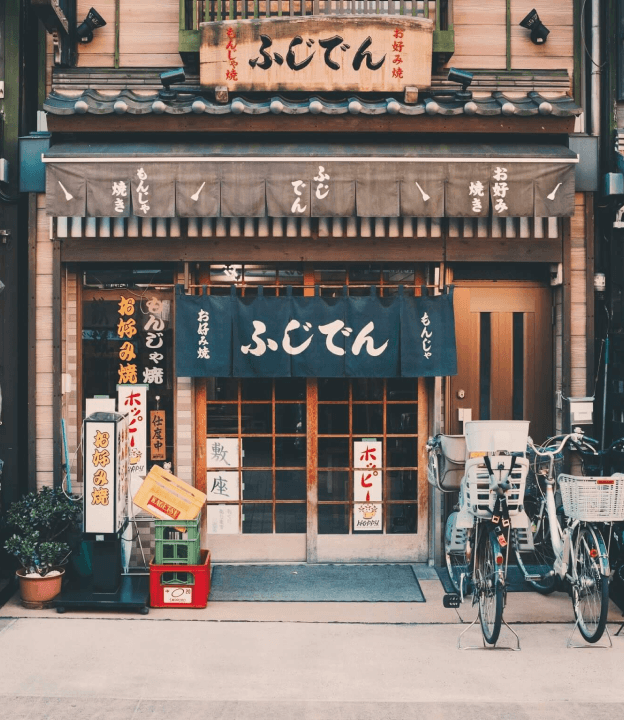
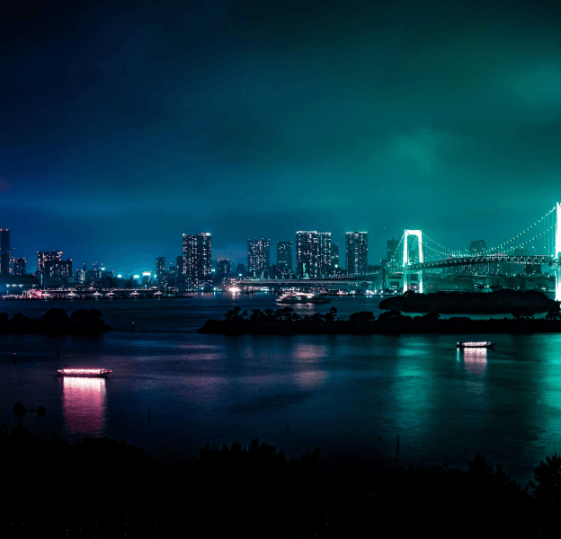

Chegada
Nossa viagem começou no Aeroporto Internacional de Narita, localizado a cerca de 60 km de Tóquio. Após desembarcar e fazer todos os procedimentos de imigração, fomos recebidos pela equipe da Next Trip, que nos conduziu até o nosso hotel.

Histórias de viagens de nossos clientes. Inspire-se, encontre roteiros e dicas! Qual seu próximo destino?
Nossa viagem começou no Aeroporto Internacional de Narita, localizado a cerca de 60 km de Tóquio. Após desembarcar e fazer todos os procedimentos de imigração, fomos recebidos pela equipe da Next Trip, que nos conduziu até o nosso hotel.

Nos hospedamos no luxuoso Hotel Okura Tokyo, localizado no bairro de Toranomon. O hotel possui uma vista incrível para a cidade, e oferece uma ampla gama de serviços, incluindo um spa, uma piscina, restaurantes renomados e um lounge bar. Ficamos encantados com a atenção aos detalhes e a qualidade do atendimento.

Vista da cidade da janela do hotel!
Começamos nosso tour pela cidade com uma visita ao famoso Templo Sensoji, um dos mais antigos e importantes templos budistas do Japão. Caminhamos pela rua comercial Nakamise, onde encontramos muitas lojas vendendo artigos típicos japoneses, como quimonos, leques e comidas tradicionais. Em seguida, visitamos o icônico cruzamento de Shibuya, um dos mais movimentados do mundo, onde observamos a sincronia dos pedestres atravessando a rua. No dia seguinte, visitamos o Parque Ueno, que abriga o Museu Nacional de Tóquio, onde pudemos conhecer a história e cultura japonesa. À noite, fomos a um típico Izakaya, um bar japonês que serve uma grande variedade de pratos e bebidas.
Tóquio é famosa por suas lojas de departamento e centros comerciais, e não podíamos deixar de visitar algumas delas. Fomos ao famoso distrito comercial de Ginza, onde encontramos lojas das marcas mais renomadas do mundo. Também visitamos o distrito de Akihabara, conhecido como o centro de eletrônicos e entretenimento de Tóquio, onde encontramos diversas lojas de jogos, eletrônicos e mangás.
Não se pode falar do Japão sem mencionar sua gastronomia. Tivemos a oportunidade de experimentar uma grande variedade de pratos típicos, como sushi, sashimi, ramen e tempura, além de doces tradicionais como o mochi.
Nossa viagem a Tóquio com a agência Next Trip foi uma experiência inesquecível. A equipe da agência cuidou de todos os detalhes, desde a reserva do hotel até a escolha dos melhores lugares para visitar e comer. Recomendamos a Next Trip para todos que desejam fazer uma viagem incrível ao Japão.
Osaka é uma cidade agitada e moderna no Japão. A cidade é famosa por sua gastronomia deliciosa e por ser um excelente ponto de partida para explorar outras cidades japonesas próximas.
Hiroshima é uma cidade histórica no Japão, conhecida por ser o local onde ocorreu o bombardeio atômico durante a Segunda Guerra Mundial. Hoje, a cidade é um símbolo de paz e reconciliação, e oferece uma variedade de atrações turísticas, incluindo o Parque Memorial da Paz de Hiroshima e o Museu Memorial da Paz de Hiroshima.
Kyoto é uma cidade histórica no Japão, conhecida por seus templos, jardins e palácios. A cidade é um importante centro cultural e turístico do país, e oferece uma variedade de atrações, incluindo o Templo Kinkaku-ji, o Templo Fushimi Inari-taisha e o Palácio Imperial de Kyoto.